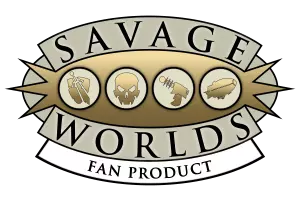
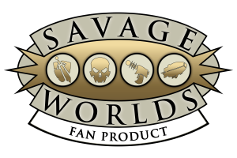

***
***
***
***
***
***
La Real Compañía Privilegiada del Caribe (RCPC) es una compañía española con privilegios en todos los territorios del Caribe controlados por los españoles. Fue creada por Hernando de Villalba, un rico noble terrateniente castellano, en 1700. Esta empresa tiene el control de todo el comercio entre España y el Caribe español. Nada entra o sale del Caribe sin pasar por sus barcos tras haber pagado diferentes impuestos y tasas.
Debido al apoyo del gobierno de España y a que controla la mayoría del comercio del Caribe tiene gran poder en la zona pudiéndose considerar que el director de cada casa comercial que hay en cada isla del Caribe es casi más poderoso que los propios gobernadores de las islas. Además debido a su apoyo por parte de la Corona de España cuenta con el apoyo y la protección de la Armada Española.
Bajo una capa de legalidad y otra de prosperidad economica se esconde la autentica realidad de la RCPC, una secta de adoradores del gran Cthulhu. No hay negocio turbio en el Caribe en el que alguno de los miembros de su circulo interno no esté metido sacando tajada. Todas esas actividades delictivas les proporcionan recursos para conseguir los autenticos objetivos del culto, la ascensión de R'lyeh y el regreso del gran y poderoso Cthulhu.
El culto se dedica a provocar el mal por todo el Caribe, con rituales y sacrificios humanos, pactos con fuerzas extradimensionales o esclavizando a pobres campesinos para trabajar en campos donde crecen extrañas plantas de origen desconocido.
***
El culto
*** La mano ejecutora de la RCPC, el Darth Vader del juego.
Mary Read es mi homenaje a uno de mis personajes preferidos de 50 brazas, Tressa la Roja.
*** Es el grano en el culo de compañía privilegiada del Caribe y se dedica a sabotear sus planes de sacar a Cthulhu de su tumba acuática en R’lyeh.
***
No te vamos a mentir, esta es una ambientación acuática y como es normal debería haber profundos. Y sí, las profundidades del Caribe están llenas de asentamientos acuáticos de los profundos y los héroes deberán enfrentarse a ellos muchas veces.
Los profundos son los orcos de los juegos de rol ambientados en Lovecraft y te van a servir como, secuaces, sirvientes, guardias, carne de cañón, … Pero puedes usarlos de otras formas creativas.
Un uso interesante que puedes darle es como fuerza de la naturaleza debido a su gran número, algo contra lo que los héroes no podrán luchar, solo podrán ver como pasa ante sus ojos. Por poner unos ejemplos, puedes usarlos para hundir flotas de barcos o arrasar ciudades como si de tornados y terremotos se tratarán.
Puedes hacer que tus villanos tengan faraónicas fortalezas construidas en pocas semanas y vigiladas por profundos. Y quien dice fortalezas, dice flotas de barcos, caminos, puentes, … Si los héroes destruyeron algo que no querías que lo destruyeran puedes usar un ejército de profundos que lo reconstruya en semanas.
Puedes hacer que los personajes tengan que huir de una localización y no volver en un tiempo ante la abrumadora cantidad de profundos que hay en la zona. Tampoco es bueno abusar de este recurso porque perdería coherencia si todo el Caribe está infestado de profundos.
Por último, como se pueden hibridar con humanos también podrás usarlos como marineros de barcos de la RCPC al servicio de sus oscuros objetivos, como espías en las tabernas de los puertos, … Las opciones son muchas.
Hay una serie de reglas que modifican las normas generales de creación de personajes:
Mitos de Cthulhu representa los conocimientos que tiene el personaje sobre los Mitos de Cthulhu, los monstruos, los hechizos, ritos, objetos, … y la historia que hay detrás de ellos.
Esta habilidad no se puede escoger en la creación del personaje. Solo mediante el estudio de libros prohibidos y enfrentandote a los horrores de los mitos podrá subir está habilidad. Reglas especiales:
El Criollo es la lengua más común del Caribe, casi todo el mundo la entiende y lo hablan. Empezo como un lengua muy básica creada con la mezcolanza de lenguas indigenas, africanas y europeas con la que comunicarse y comerciar y se fue haciendo más rica y compleja según se extendía su uso y se necesitaba para trasmitir conceptos más complejos. Aun así es vista por muchas personas de origen europeo como una lengua de gente de bajo nivel cultural. Muchos de ellos tratarán como inferiores a aquellos que se dirijan a ellos en Criollo.
La mente artística e imaginativa del personaje es muy susceptible a los ondas mentales del Gran Cthulhu, teniendo terribles pesadillas sobre Cthulhu y su tumba acuática de R'lyeh.
Siempre que el jugador se duerma sin tener benis, tendrá unas horribles pesadillas que no le dejarán dormir y tendrá una penalización de menos -1 por cansancio hasta que descanse una noche entera teniendo un beni y por tanto sin pesadillas. Durante las pesadillas podrá hacer uso de su habilidad de Mitos de Cthulhu para tratar de sacar información, sobre Cthulhu, R’lyeh y sus adoradores y sus planes.
Además de estas desventajas listadas a continuación puedes usar como trastornos mentales Avaricioso, Hábito, Delirio, Fobia y Mania.
El cerebro del personaje, muy sabiamente, ha bloqueado parcialmente el recuerdo concreto de una situación traumática (cómo le torturaron, cómo presenció como un vampiro de fuego quemaba a toda su familia, ...). No quiere decir que no recuerde ese hecho concreto, pero solo generalmente. Los detalles son lo que ha reprimido y todos sabemos que el demonio está en los detalles. Esos detalles vuelven a su mente como flashbacks mostrándoles los detalles más traumáticos del evento que produjo la amnesia, los gritos espeluznantes, el olor a sangre podrida, los brillantes ojos del asesino, ...
En juego supone que una vez por sesión en momentos de estrés puede sufrir esos flashbacks fallando la tirada que vaya a hacer sin posibilidad de gastar un Beni para repetirla. Por estrés entendemos cualquier tirada enfrentada, desde jugar al poker a discutir con un oponente político o tratar de entrar sigilosamente en la casa del gobernador. Si se coge como mayor el máster podrá hacerle fallar cualquier tirada de combate y dejarle aturdido como si le hubieran hecho una finta o un truco sucio.
El héroe sufre depresión y todo se le hace cuesta arriba. Si es menor al principio de cada sesión deberá tirar un d6. Si consigue un éxito, sobrelleva la depresión hasta la próxima sesión. Si falla pierde uno de sus bennis hasta la próxima sesión. Si es mayor directamente cuenta con un beni menos.
***
***
***
***
El personaje está convencido de que los enemigos están en todas partes, y cree que todos están contra él. Siempre está mirando a su espalda esperando una traición de sus compañeros o tratando de escuchar cómo conspiran a sus espaldas.
Como desventaja menor, tiene un -1 en todas las tiradas de habilidad que exijan concentración (como abrir cerraduras, jugar a las cartas, descifrar un código, …) cuando otros están a su alrededor. Si se toma como mayor, además, el -1 se aplicará a todas las tiradas de percepción ya estará más preocupado de buscar conspiraciones y enemigos ocultos que en vigilar o buscar.
***
***
***
A base de enfrentarte a un horror específico el héroe se ha acostumbrado y su cordura no sufre al estar en su presencia. A efectos de juego baja 4 niveles el TPC de un monstruo. Si el TPC modificado baja por debajo de d4 no necesita hacer tirada de TPC. Por ejemplo, un héroe acostumbrado a los profundos al ver un profundo (TPC d4) no tendrá que tirar, pero si ven una horda de 1000 profundos (TCP d12+1) solo tendrá que enfrentarse a un TPC (d6, 4 niveles menos).
El héroe ha tenido experiencias con los Mitos, quizas en su niñez o adolescencia. Puede ser que venga de un linaje de adoradores de Primigenios o que la sangre de profundo corra por sus venas. Puede ser que se enfrentara a un monstruo de los Mitos y consiguiera sobrevivir o que su abuela le transmitiera parte de los conocimientos prohibidos de su akelarre de brujas.
A nivel de juego, el personaje podrá empezar con las ventajas Nuevos poderes y Puntos de poder. Es decir, podrá empezar sus aventuras con la capacidad de hacer hechizos. Ademas, podrá adquirir con puntos de creación la habilidad Mitos de Cthulhu a d4 y dispondrá de un libro de los Mitos generado aleatoriamente.
Todo lo extraño se siente atraído hacia tí para bien y para mal. Tu personaje abre y lee el libro maldito, se pierde en el bosque y acaba encontrando la casa de la bruja o se le cae una probeta del laboratorio del científico loco.
Todas las tiradas de botín en las que te veas involucrado podrás repetirlas gastando un beni y el grupo podrá quedarse con el mejor resultado. En caso de no conseguir ningún éxito en ninguna de las tiradas el imán de lo extraño deberá hacer una tirada en la tabla de maldiciones pero la duración solo será en horas y recuperará el beni gastado.
En caso de que haya varios jugadores con esa ventaja cada jugador con la ventaja tendrá que gastarse un beni y añadirá una tirada extra. En caso de maldición todos los jugadores con la ventaja serán maldecidos.
Hay nuevos usos para los benis:
***
***
***
Usarla en público supone adquirir la desventaja de Buscado (por brujería)
El horror y la cordura sustituyen a las reglas de miedo de SWADE. Las ventajas y desventajas que afectan al miedo (como Osado o Cobarde) no son válidas en esta ambientación y no pueden ser adquiridas por los héroes. Todo personaje tiene 4 puntos de cordura y si pierde todos caerá en la locura y pasará a ser un PNJs al servicio del DJ.
Cada vez que un personaje se enfrente a un ser los Mitos deberá hacer una tirada de enfrentada de Inteligencia contra la tirada de pérdida de cordura (TPC) del monstruo. Si pasa la tirada no ocurre nada, el personaje ha racionalizado correctamente lo que ha ocurrido y puede actuar con normalidad.
Si falla la tirada deberá hacer una segunda tirada de espíritu, si saca más éxitos que la tirada TPC simplemente quedará aturdido. Si falla perderá un punto de cordura. Como ya hemos explicado, si pierde toda su cordura cederá ante el horror y la locura y pasará a ser un PNJ.
Puede evitarse la pérdida de puntos de cordura adquiriendo un trastorno mental permanente con un máximo de 3 trastornos permanentes o gastando un beni y adquiriendo un trastorno mental de forma temporal.
Los trastornos mentales son un tipo de desventaja y siguen sus mismas reglas. Para decidir el trastorno deberá sacar una carta y revisar la tabla de Trastornos. Si es temporal deberá consultar la tabla de Duración del trastorno. Los trastornos permanentes repetidos pueden apilarse si son menores convirtiéndose en un trastorno mayor. Si no tendrá que volver a coger una carta nueva. Los temporales simplemente ampliarán el tiempo.
| Tabla de Trastornos | ||||
|---|---|---|---|---|
| ♥ | ♣ | ♠ | ♦ | |
| 2 | Paranoia (menor) | Manía (menor) | ||
| 3 | ||||
| 4 | ||||
| 5 | ||||
| 6 | Fobia (menor) | Delirio (menor) | ||
| 7 | Amnesia y flashbacks (menor) | |||
| 8 | ||||
| 9 | ||||
| 10 | Manía (mayor) | |||
| J | ||||
| Q | Avaricioso | Delirio (mayor) | Sanguinario | |
| K | Amnesia y flashbacks (mayor) | |||
| A | Fobia (mayor) | Paranoia (Mayor) | Hábito (mayor) | Depresión (mayor) |
| Tabla de Duración del trastorno | ||||
|---|---|---|---|---|
| ♥ | ♣ | ♠ | ♦ | |
| 2 - 10 | 2 -10 turnos | 2 -10 minutos | 2 -10 horas | 2 -10 días |
| J | 11 turnos | 11 minutos | 11 horas | 11 días |
| Q | 12 turnos | 12 minutos | 12 horas | 12 días |
| K | 13 turnos | 13 minutos | 13 horas | 13 días |
| As | 14 turnos | 14 minutos | 14 horas | 14 días |
Las TPCs pueden ser modificadas en determinadas situaciones.
| Tabla de Modificación del TPC por grandes grupos | ||||||
|---|---|---|---|---|---|---|
| Tamaño de la manada | d4 | d6 | d8 | d10 | d12 | |
| hasta tamaño del grupo (0) | d4 | d6 | d8 | d10 | d12 | |
| hasta tamaño del grupo x 2 (+1) | d6 | d8 | d10 | d12 | d12+1 | |
| hasta tamaño del grupo x 5 (+2) | d8 | d10 | d12 | d12+1 | d12+2 | |
| hasta tamaño del grupo x 10 (+3) | d10 | d12 | d12+1 | d12+2 | d12+3 | |
| hasta tamaño del grupo x 20 (+5) | d12 | d12+1 | 12+2 | d12+3 | d12+4 | |
| hasta tamaño del grupo x 50 (+6) | d12+1 | d12+2 | d12+3 | d12+4 | d12+5 | |
Todos los secuaces tienen un único punto de cordura y si lo pierden caerán incapacitados entre gritos de horror o saldrán corriendo presas del miedo.
***
La cordura solo se recupera entre campañas o en situaciones especiales de heroísmo excepcional. No hay psicólogos ni psiquiatras que puedan reparar tu quebrada psique, sólo enfrentarse al horror y vencerlo puede ayudar a sanar tu mente.
Normalmente estas situaciones vendrán marcadas en la campaña. Por ejemplo, puede establecerse que salvar a un pueblo de pescadores de ser masacrado por una horda de profundos puede recuperar 1 punto de cordura. Hacer que Cthulhu vuelva a yacer eternamente en R’lyeh podría devolver toda la cordura.
Todo héroe en esta ambientación tiene capacidades mágicas, pero debe saber las fórmulas, los rituales y las recetas para poder activar las fuerzas oscuras y enfocarlas de la manera que le interesa. Y la única forma de conocer nuevos hechizos es estudiar tomos de los mitos Cthulhu. A nivel de juego podríamos decir que todo personaje tiene la ventaja Trasfondo arcano (Magia Primigenia).
Todo personaje dispone de tantos puntos de poder diarios como su nivel de Espíritu que recupera tras una noche de descanso (8 horas de descanso sin interrupciones).
Hay objetos y pociones mágicas que pueden dar puntos temporales de poder.
La ventaja Puntos de poder otorga tantos puntos de poder nuevos como el Espíritu del personaje. Si aumenta el espíritu (temporal o permanentemente) aumentan los puntos de poder.
La ventaja de Nuevos poderes solo podrá adquirirse tras leer un libro de los mitos. Los libros a veces dejan que el jugador elija los hechizos para su personaje, pero a veces forzaran uno o dos hechizos específicos.
Recuperación rápida supondrá que necesitará la mitad de tiempo de descanso para recuperar todos sus puntos de poder. Como ejemplo:
Otras ventajas asociadas a la ventaja Trasfondo Arcano, como Canalización, funcionarán normalmente pero puede que haya ventajas de otras ambientaciones que quieras usar y que tengas que adaptar teniendo en cuenta estas reglas.
Los ornamentos de todos los hechizos deben tratar de seguir la ambientación lovecraftiana, deberán tener un toque oscuro, nigromántico muchas veces y rozando la locura y el horror.
No todos los poderes de SWADE son posibles en esta ambientación. Aquí tienes un listado de los poderes y sus versiones en hechizos que son posibles en ¡Arrr! Cthulhu.
| Listado de Poderes permitidos | ||
|---|---|---|
| Poder | Nombre de hechizo | Ornamentos |
| Adivinación | Augurios del soñador | El hechicero recita las diferentes ensalmos antes de dormir y recibelos augurios aen sueños. |
| Ritual vudú de adivinación | Tras el sacrificio de un animal pequeño como una gallina o un conejo, el hechicero puede leer sus entrañas. | |
| Amistad animal | Dominar a las bestias | *** |
| *** | *** | |
| Ceguera | *** | *** |
| Confusión | *** | *** |
| Destierro | *** | *** |
| Drenaje de puntos de poder | *** | *** |
| Invocación de aliados | *** | *** |
| Marioneta | Hipnosis | Los ojos del hechicero empizan a brillar mientras mira al fijamente a su victima y le da ordenes con con una voz grave. |
| Protección | Bendición de Yig | El dios-serpiente Yig bendice al hechicero con un piel dura y llena de escamas que le protege del daño. |
| Armadura de Dagón | Dagón otorga su protección haciendo que la piel del hechicero sea gomosa resistente bloquenda muchos ataques. | |
Por cada poder tenemos varias opciones de hechizos y rituales que no son mas que ornamentos para ese poder. La idea es que el jugador tenga diferentes opciones al adquirir un nuevo poder, todos ellos con tintes cthulhulianos. Al leer un libro no encontraŕá como tal poderes sino hechizos con ornamentos prefijados. Es decir, leyendo el "Extrano relato de John Knoxville en la isla de Jamaica" no encontrará el poder Protección, sino la Bendeción de Yig que le dara protección contra el daño haciendo que su piel se vuelva escamosa y dura.
Hay muchos ejemplos de tomos de conocimiento oscuros en los libros H. P. Lovecraft y sus seguidores, como el Necronomicón o el Libro de Eibon. Sin embargo, para esta ambientación hemos decidido usar libros con un toque diferente.
La idea es que los libros no sean los clásicos de los mitos de Cthulhu sino bitácoras de navegación, diarios de marineros, recopilaciones de cartas de colonos, guías de exploradores del Caribe, manuscritos de misioneros, …
Son libros más mundanos donde el autor cuenta sus experiencias con el horror y la locura de los mitos de Cthulhu. Además, elementos como el formato, edición o estado de conversación puede hacerlos todavía más únicos.
También hay que tener en cuenta que muchas veces puede que sean únicos y no haya más copias ya que, como hemos dicho, no sean libros en sí sino que sean correspondencia entre dos personas, un diario personal o las notas de campo con las que luego se hizo un libro completo. Esto hará que se tengan que conservar adecuadamente porque no hay más copias y si se pierden se acabo la información que contenían. También son buenos regalos que pueden conseguirte favores y contactos si los entregas a las personas adecuadas.
En cuanto a su valor monetario, los personajes no deberían poder venderlos facilmente porque los no iniciados en el mundo de los Mitos no los encontrarán interesantes y con los iniciados es más interesante usarlos como moneda de cambio para conseguir otros libros u objetos extraños. En caso de que necesitarán urgentemente dinero para situaciones extremas, como pagar un rescate o sacar a un compañero de la carcel, hazles una tiradas de botín usando el TPC del libro, pero solo pudiendo tirar luego en la tabla de riquezas.
Para poder leer un libro de los Mitos lo primero es que el personaje sea capaz de leer ese idioma. Si no sabe el idioma deberá pedir una traducción, lo que llevará tanto tiempo como leerla.
Los libros de normal necesitan 1 semana en leerse. Realmente no tienen que ser 7 días exactos si no que representa una unidad de tiempo un poco larga que puede ser 2 a 10 días. Una semana puede ser:
Serían periodos de varios días de relativa tranquilidad en la que poder centrarte a leer y estudiar.
Si necesitan leer el libro para continuar y paran expresamente para leerlo necesitaran 7 días para leerlo y estudiarlo.
Durante esa semana podrá llevar una vida normal e incluso hacer pequeñas acciones, como visitar al gobernador, batirse en duelo, ... cosas rápidas y sencillas. No podrá hacer, por ejemplo, vigilancias, adentrarse en la jungla, construir algún artilugio o ayudar activamente en el barco (dando bonus a pilotaje o a combate).
Una vez leído el libro se marcará como leído y hara la TPC. Cuando pueda gastar avances podrá adquirir las ventajas, habilidades y demás elementos que exigen leer libros de los Mitos.
Los libros solo pueden ser leídos por una persona a la vez. Los libros que tardan medía semana podrán ser leídos por dos personajes en una misma semana. Y el personaje, si su cordura se lo permite, podrá leer dos libros cortos en esa semana.
Hay libros largos que necesitan más de una semana para leerlos. Necesitan varios periodos seguidos, por ejemplo la ida y vuelta a los Cayos de Florida. Si se intercala el estudio de un libro largo con la lectura de otro libro se pierde el avance hecho en ese libro largo.
La lectura de un libro como requisito solo va a poder usarse en un único avance. Si en un mismo rango queremos subir Mitos y y escoger la ventaja Nuevos Poderes. Deberemos leer dos libros diferentes. Leer un libro más de una vez puede ser divertido pero a nivel de juego no aportó ninguna ventajas ni desventajas.
Los personajes irán acumulando libros a lo largo de sus aventuras. Estas pequeñas bibliotecas pueden ayudar a sus tiradas de Mitos siempre que las tengan cerca y puedan dedicarles un día de estudio. Cada 5 libros darán un +1 a la tirada de Mitos.
Cada libro tiene una serie de características que se definen haciendo tiradas en un sistema de tablas:
| Tabla de Título para libro | |||
|---|---|---|---|
| 1d20 | Inicio del título | 1d20 | Final de título |
| 1 | El libro prohibido | 1 | [y|sobre|de] la magia negra |
| 2 | Las memorias de [Nombre] | 2 | [y|sobre|de] los grandes monstruos marinos |
| 3 | Informe del [Capitán|Sargento|Soldado] [Nombre] | 3 | para todos |
| 4 | Relatos de terror | 4 | [y|sobre|de] fantasmas y aparecidos |
| 5 | Las confesiones de [Nombre] | 5 | antes de morir |
| 6 | Historia apócrifa | 6 | en el Infierno |
| 7 | Diario de abordo del [Nombre barco] | 7 | [y|sobre|de] los que acechan en las sombras |
| 8 | Mis viajes | 8 | desde su lecho de muerte |
| 9 | Historia natural | 9 | [y|sobre|de] los demonios del mar |
| 10 | Aventuras fantásticas | 10 | [en|de|para] la jungla |
| 11 | El descenso a la locura de [Nombre] | 11 | [en|desde|hasta] el fondo del mar |
| 12 | Recetas de cocina | 12 | de siempre |
| 13 | Cartas de [Nombre] | 13 | [y|sobre|de] los dioses paganos |
| 14 | Cuentos de miedo | 14 | [en|por] el viejo continente |
| 15 | Oscuros secretos | 15 | sin censura |
| 16 | Historias inconfesables | 16 | [en|por] el Caribe |
| 17 | Extraños relatos eróticos | 17 | [en|por] [Isla del Caríbe] |
| 18 | El manuscrito perdido | 18 | en el fondo del mar |
| 19 | El diario perdido de [Nombre] | 19 | más allá del tiempo |
| 20 | El viejo cantar | 20 | mas allá de la muerte |
Cuando un libro saca el mismo número en las partes de su título ... ¡bingo! tiene algo especial. Tira en la siguiente tabla. Esta característica se aplicará a todo el que lo lea.
| Tabla de Características especiales de libro | |
|---|---|
| 1D6 | Cracterísticas especial |
| 1 | Es una excelente texto educativo. El lector consigue un +1 a Conocmientos Generales, Ciencias, Humanidades, Medicina o Tácticas. |
| 2 | Los hechos que narra el libro son tan espeluznantes y terribles que obligan a hacer una segunda tirada de TPC en caso de pasar una primera TPC. |
| 3 | *** |
| 4 | *** |
| 5 | *** |
| 6 | La historia tiene un buen final y se narra de una forma tan reconfortante que el lector recupera 1 punto de cordura. |
| Tabla de Idioma y TPC para libros | |||
|---|---|---|---|
| 1d20 | Idioma | 1d12 | TPC |
| 1-8 | Español | 1-4 | d4 |
| 9-12 | Inglés | 5-6 | d6 |
| 13-15 | Francés | 7-8 | d8 |
| 16-17 | Criollo | 9-10 | d10 |
| 18-19 | Holandes | 11 | d12 |
| 20 | Latín | 12 | d12 + 1 |
| Tabla de Tamaño y estado de conservación para libros | |||
|---|---|---|---|
| 1d10 | Tamaño | 1d10 | Estado de conservación |
| 1 | Conjunto de notas. Son un conjunto de notas tan inconexas que el horror que tratan de explicar no se puede percibir bajando un nivel el TPC (valor mínimo d4). | 1 | Se cae a pedazos. Solo podrá usarse una vez. |
| 2 | Relato corto. Exige media semana leerlo en vez de 1 semana. | 2 | Mojado e ilegible. Solo pueden extraerse dos hechizos, el resto son ilegibles. Se deben escoger al azar al encontrar el libro. Al leer este libro y coger la ventaja Nuevos poderes solo se pueden aprender esos hechizos. |
| 3 | Libro por entregas. *** | 3 | Muy usado y leído. Está lleno de notas y apuntes de anteriores lectores ayudan a racionalizar lo que hay escrito bajando un nivel el TPC (valor mínimo d4). |
| 4-8 | Libro. Un libro de tamaño normal escrito a mano o impreso. | 4-8 | Usado y leído. Ha pasado seguramente por algunas manos antes que tú pero no tiene ningún problema de conversación. |
| 9 | Tomo de gran tamaño con diagramas y/o grabados. Sus grabados y/o diagramas son tan precisos y descriptivos que suben un nivel al TPC. | 9 | Bien conservado. Está en muy buen estado y seguro que puede ser un buen regalo para la persona adecuada. |
| 10 | Varios tomos. Exige 2 semanas para estudiarlo en vez de 1. | 10 | Recién impreso/escrito. El autor/editor están vivos y se les podrá mandar cartas o entrevistar en persona dudas sobre los Mitos. Pueden convertirse en Contactos. |
Si un lector destina medi día a ojear un libro y pasa una tirada del Idioma en que está escrito el libro, puede hacerse una idea de sus características (los hechizos que puede contener, su TPC y sus características especiales).
Practicar magia no solo afecta a tu cordura también a tu reputación y si no tienes cuidado puedes acabar quemado en la plaza del pueblo por brujería. Quién más quien menos en nuestro Caribe ha presenciado prodigios mágicos, pero no es lo mismo que la vieja ermitaña sane las fiebres de un niño con sus bebedizos a que los héroes entren volando en la casa del Gobernador de Jamaica lanzando rayos verdes.
Queda a discreción del director de juego cuando los jugadores pueden ser buscados y perseguidos por brujos o que los pueblerinos atranquen las puertas y las ventanas ante su paso, pero te damos unas sencillas normas que puedes tener en cuenta a la hora de gestionar la reputación de los PJs.
Todos sabemos que lo que mueve a los piratas es saquear barcos, conseguir un buen botín para gastarlo en una taberna del puerto o enterrarlo en una isla desierta. Y estaba claro que en este juego ibamos a tener una buena tabla de tesoro con tintes lovecraftianos.
Todos los seres que hacen perder cordura tienen botín si son derrotados. Después de vencer al monstruo uno de los jugadores deberá lanzar la TPC básica del monstruo. Según los éxitos que consigan podrán tirar en diferentes tablas:
Si se consigue:
Puede haber situaciones, decisiones, trampas, misterios, PNJs, … que tengan tirada de botín que deberemos usar como si fuera la tirada de pérdida de cordura, salvo que en esos casos no se podrán usar éxitos en la tabla de más allá del tiempo y el espacio.
| Tabla de Riquezas | ||
|---|---|---|
| 1d12 | Descripción | Valor en doblones |
| 1-4 | Doblones y otras calderillas | 1d10 x 10 |
| 5-6 | Pequeños objetos de oro | 2d10 x 20 |
| 7-8 | Piedras preciosas de bajo valor | 1d10 x 50 |
| 9-10 | Buena cantidad de doblones y calderilla | 1d10 x 100 |
| 11 | Joyas de oro con piedras preciosas | 1d10 x 200 |
| 12 | Piedras preciosas de gran valor y un barril de buen rón. | 1d10 x 500 Con buen rón y el bolsillo lleno de oro es obligatorio correrse una buena juerga. se pierden un día entero entre fiesta y resaca. |
| Tabla de Objetos extraordinarios | |
|---|---|
| 1d12 | Tipo |
| 1-3 | Arma |
| 4-6 | Protección |
| 7-8 | Hechizo |
| 9-10 | Libro prohibido. Vete a la sección de Generación de libros de los Mitos para crearlo. |
| 11 | Objetos pequeños y útiles |
| 12 | Objetos de gran tamaño |
| Tabla de Objetos pequeños y útiles | ||
|---|---|---|
| 1dX | Nombre | Descripción |
| 1 | Anestésico natural de la jungla | Este bebedizo hecho con extractos de misteriosas plantas de la jungla quita un nivel de penalización por daño durante una escena. El recipiente tiene 1d6 usos. |
| 2 | Tinta invisible | Está compuesto por un juego de tintero y pluma y un saquito de polvos. El mensaje que se escribe con esta tinta se hace invisible en segundos y solo se rebela cuando echan encima los polvos del saquito. Hay tinta y polvos para 1d8 usos. |
| 3 | Brea pegalotodo | Este ungüento maloliente es un potente pegamento de secado muy rápido que
permite reparar un objeto roto de tamaño
normal (algo que se pueda llevar en una mano) en un solo turno con una tirada
exitosa de Reparar.
La duración de la reparación no suele ser muy larga, utliza la Tabla de Duración del
trastorno para
determinar la duración de la reparación. También puede usarse para reparar como pequeñas
fugas del casco. Si se quiere reparar algo de mayor tamaño, el director de juego podrá establecer las dosis y turnos que se necesitan para hacer las reparaciones. El bote tiene 1d12 usos. |
| 4 | Canicas magnetizadas | Estas bolas de metal ennegrecidas del tamaño de canicas se magnetizaron cuando las toco un rayo de tormenta. Ahora se atraen entre sí, aunque haya mucha distancia entre ellas. Son perfectas para meter una de las canicas en un cofre o ponersela en un bolsillo a una persona y así poder seguirle el rastro a distancia. Mientras el personaje que lleva la canica este a menos de un kilometro podrá saber donde está la otra canica dejando la suya rodar por el suelo y siguiendo la dirección que indique |
| 5 | Pollo de goma con polea dentro | No sirve para nada, solo ocupar espacio en tu inventario. Mira detrás de ti, ¡un mono de tres cabezas! |
| *** | *** | *** |
| *** | *** | *** |
| Tabla de Objetos de gran tamaño | ||
|---|---|---|
| 1dX | Nombre | Descripción |
| 1 | Campana de buceo de cristal | Esta campana de metal y cristal permite que hasta dos personas bajen al fondo marino, mientras otra opera una bomba de agua. La campana tiene unos brazos mecánicos que permiten operar en el fondo marino. La campana se puede desplazar muy lentamente y debido a su tamaño (+2) no podrá entrar en sitios pequeños. |
| 2 | Cometa de vigia | Esta cometa de gran tamaño se ata al barco y se hace volar cuando hay viento. Tiene un arnes de cuerdas que permite a una persona elevarse por los aires y vigilar desde alturas mayores que la cofa del barco. Otorga +2 a Notar a los vigías y es especialmente útil en altamar ya que permite ver los barcos que se acercan incluso antes de que ellos puedan verte, permitiendo montar o escapar de emboscadas. Si se corta la cuerda el vigía puede intentar planear y aterrizar con una tirada exitosa de Atletismo. |
| 3 | Faro del diablo | Este aparato de gran peso y un tamaño de 1m3 es la evolución
mecánica y moderna de los fuegos
que encendían los piratas fingiendo ser faros para atraer a los barcos a los arrecifes
para hundirlos y saquearlos. Contiene un intrincado mecanismo que mueve una serie de lentes y espejos. Poniendolo sobre una fuente de luz y configuraádolo mediante palancas, permite fingir la cadencia e intensidad de los destellos de cualquier faro. Un marino experimentado deberá superar una tirada enfrentada de Pilotar (barcos) contra 1d10 del faro del diablo o será engañado pudiendo acabar perdido en la noche y cochando contra arrecifes y rocas. |
| 4 | Capa de salamandra de fuego | Esta capa que permite tapar a un persona y un acompañante esta hecha de una tela tratada quimícamente para no quemarse y proteger del fuego y calor, que no del humo. Solo protege de fuegos de tamaño y temperatura normal, pudiendo meterse en una casa en llamas y salvar a un bebé. Para fuegos y temperaturas extremas como lava se quema en 1d6 turnos, pudiendose por ejemplo colocar sobre lava y ponerse encima mientras se consume. |
| *** | *** | *** |
| *** | *** | *** |
Todos los objetos de la siguiente tabla son objetos extraños y misteriosos, muchas veces malditos, que los personajes deben identificar y aprender a usar. Para ello deberán pasar una tirada de Mitos, o que alguíen que lo reconozca les explique qúe es y cómo funciona.
| Tabla de Más allá del tiempo y el espacio | ||
|---|---|---|
| 1d20 | Nombre | Descripción |
| 1 | Símbolo de protección | Este amuleto que puede tener muchas formas, desde pentaculos de plata a saquitos de polvos, ofrece a su portada un +1 a todas las tiradas enfrentadas de hechizos y habilidades especiales de los monstruos de los Mitos. |
| 2 | Polvo de Ibn-Ghazi | El polvo tiene la capacidad de volver visible por un momento a criaturas invisibles e inmateriales cuando este se dispersa soplándolo hacia ellos. 1D6 uso |
| 3 | Arma lanzarrayos de la gran raza de Yith | Este arma de rayos parecida a una cámara de fotos de gran tamaño posee un gran poder destructivo. Ver características en la sección de Equipo. |
| 4 | Carta náutica de los profundos | Estos mapas hechos por los profundos en piel curtida de tiburones y grandes cetáceos son muy detallados en temas de corrientes, costas, arrecifes, … y otorgan +2 a las tiradas de pilotar (barcos) dentro de la zona representada por el mapa. |
| 5 | Flauta de hueso de byakhee | Al tocar esta flauta hecha con hueso de byakhee, se puede convocar en minutos una gran tormeta, cuyo centro será donde se encuentre el flautista. Con una tirada de Interpretar exitosa se convoca la tormenta y por cada exito adicional la tormenta impondrá un -1 a todas las tiradas de maniobra de la nave. Es una táctica perfecta para escaparse de combate navales, pero el gran problema de este objeto es que te encontrarás en el centro de la tormenta y tu barco tambien tendrá que luchar por salir de la tormenta. |
| 6 | Llave de plata | Esta llave gran tamaño, de un material desconocido parecido a la plata y con extraños jeroglíficos abre cualquier cerradura automáticamente, incluso aquellas cerradas mágicamente. |
| 7 | Cristal de Leng | Este cristal traslucido tiene un marco de madera con unas contraventanas para cerrarlo.
Cuando se
coloca sobre una superficie y se abren las contraventanas el cristal se vuelve transparente y
permite ver a través del cristal como si fuera una ventana abierta en la superficie colocada.
El principal problema es que la ventana se abre hacia los dos lados y también pueden verte
desde el otro lado. Para activar el cristal de Leng el personaje debe estar en contacto con el cristal y este con la superficie y gastar la mitad de los puntos de armadura del material de la superficie. El efecto durará mientras el cristal esté en contacto con el hechicero y la superficie. El personaje puede mover el cristal a través de la superficie mientras no cambie el material. Por ejemplo, si quiere verse a través de una pared de piedra (armadura 10) debera gastar 5 puntos de poder. El cristal tiende a distorsionar de alguna manera lo que se ve y hacerlo más perturbado y caótico. Por ello, si se tiene que hacer una TPC por algo visto a través del cristal la TPC tiene un nivel más. |
| 8 | Anfora de viaje por las Tierras del sueño | Esta pequeña anfora griega con infinidad de nombres grabados en su superficie contiene un
icor de color verde.
Si se graba el nombre de un lugar y todos los tripulantes de un barco toman
el bebedizo de la anfora, caeran en un profundo sueño y la nave entrará en las Tierras
de los Sueños y viajará por sus mares para volver al mundo normal y aparecer en el lugar escrito
en la anfora.
El anfora se quedará
en la Tierra de los sueños, para volver a aparecer años mas tarde en el mundo de la Vigilia. Si algún tripulante se despierta mientras están en la Tierra de los Sueños, el barco y sus tripulación se quedarán allí atrapados hasta que encuentren la forma de volver. |
| 9 | Cilidro cerebral de los Mi-Go | Dentro de estos cilindros de metal verduzco hay un cerebro humano vivo. Los Mi-Go se dedican a
meter cerebros
de humano sobresalientes en estos cilindros para llevarselos a su planeta y poder estudiarlos y aprender
de ellos.
Estos cilidros tiene un sensor que le permite
al cerebro escuchar que pasa a su alrededor y otro dispositivo que le permiter comunicarse con una voz
metálica. Estos cilindros están pensados para transportar cerebros y por eso los mantienen medio desactivados. El cerebro puede contestar preguntas y elaborar teorías a partir de sus conocmientos, pero sus funciones sociales/sentimentales están desactivadas, ni se aburre, ni se emociona, ni siente miedo, ... A nivel de juego, cada cerebro permite a su propietario hacer una tirada de d10 (sin dado salvaje) de algún conocimiento, como historia o astronomia. El DJ puede decidir la habilidad al azar o escoger una según el contexto donde se encontro. Si algún heroe abre el cilindro o se rompe y deja ver su contenido, todos los presentes tendrán que hacer una TPC de d6. |
| 10 | Objeto perdido en el tiempo | [NO LEAS ESTO A LOS JUGADORES] El objeto que han encontrado es algo venido del futuro por alguna extraña razón. Puede ser cualquier cosa, desde una bandeja de plástico con dibujos de bicletas hasta una botella de refresco de cola o un reproductor MP3. Descríbelo de la forma más críptica que puedas. Todas las tiradas de Mitos para identificarlo fallarán siempre y nadie podrá decirles qué es. Puedes usarlo como gancho para alguna loca aventura o haz que alguien descubra por casualidad su función. |
| 11 | *** | *** |
| 12 | *** | *** |
| 13 | *** | *** |
| 14 | *** | *** |
| 15 | *** | *** |
| 16 | *** | *** |
| 17 | *** | *** |
| 18 | Mascarón de Cthulhu | Este mascarón es en realidad una figura de piedra negra montado sobre una estructura de madera y hierro
para poder acoplarla a la proa del barco. La figura representa a Cthulhu como un humanoide escamoso
con alas de dragón y cabeza de pulpo y parece que era usada como algún tipo de idolo religioso por
cultos de adoradores de Cthulhu. La figura tiene unas inscripciones en la base en un idioma perdido. En la Ciudad de R'lyeh, el difunto Cthulhu, espera soñando Con este mascarón en tu barco ningún profundo ni otras criaturas sirvientes de Cthulhu se atreverá a asaltarlo y atacarlo. Por el contrario, muchos miembros del culto de Cthulhu tratarán de atacar al barco para recuperar el idolo o los seguirán poder robarlo. Las noticias sobre el barco correrá entre las celulas cultistas. |
| 19-20 | Maldición | Tira en la tabla de maldiciones, la maldición durará 1d10 dias. |
| Tabla de Maldiciones | ||
|---|---|---|
| 1d8 | Nombre | Descripción |
| 1 | Pestilencia de Soggoth | Esta repugnante maldición infesta a sus víctimas de terribles pústulas supurantes y malolientes. Mientras dure el olor toda interacción con otros personajes tendrá un -2. Los animales huyen del maldito y en caso de no poder huir atacarán. |
| 2 | Mal de ojo | Mientras el personaje este maldito el usuario no podrá usar sus benis para repetir tiradas. |
| 3 | Percepción no euclidiana | El personaje maldecido esta parcialmente fuera de las leyes de la geometría euclidiana. Las distancias, los angulos y las direcciones funcionan diferente para él. Todo lo relacionado con la percepción de la profundidad, el equilibrio, las distancias y la orientación tienen un penalizador de -2 (disparar, golpear, pilotar, orientarse, ...). Como ventaja, tiene un +1 a la dificultad de ser golpeado o disparado ya que no siempre está donde parece que está. |
| 4 | *** | *** |
| 5 | *** | *** |
| 6 | *** | *** |
| 7 | *** | *** |
| 8 | Maldición de Nodens | El propio Nodens corta la conexión entre el maldito y sus puntos de poder. El sujeto maldecido no podrá hacer uso de sus puntos de poder de ninguna manera. |
El tesoro hundido es una campaña en la que los héroes deberán evitar la ascensión de R'lyeh de los oscuros fondos oceánicos del mar Caribe enfrentandose a un poderoso culto de adoradores de Cthulhu.
El tesoro hundido es como llama Hernando Villalba, dueño de la RCPC, a la ciudad sumergida de R'lyeh, donde duerme Cthulhu desde hace eones. Villalba, miembro del más alto rango del culto de Cthulhu quiere sacar a la ciudad de las aguas y despertar al gran Cthulhu y este en agradecimiento le colmará de poder y riquezas dignas de un rey y lo que más ansia, la inmortalidad.
Para llevar a cabo su plan necesita primero encontrar la ciudad, que sospecha que se encuentra en algún del Caribe. Lleva años estudiando viejos tomos malditos, apócrifas cartas náuticas y mandando a sus espías a tabernas portuarias a escuchar los locos relatos de los marineros. Está muy cerca de encontrarla pero hay algo todavía se le escapa para encontrar su "tesoro hundido".
Y eso no fuera poco debe encontrar la manera de sacar a la ciudad de las profundidades marinas para poder despertar al gran Cthulhu. Su idea es encontrar el Tridente de Dagón un objeto de gran poder que todos los profundos reverencían para poder controlarlos y sacar la ciudad de R'lyeh de su tumba acuática.
***
Comienzo: En el mar a un par de días de llegar a Puerto Rico desde España.
***
Comienzo: ***
***
En sus andanzas por el Caribe combatiendo el culto de Cthulhu, nuestros heroes pueden correr otras aventuras. Aquí tienes algunas de ellas.
Comienzo: En medio del mar
Los personajes avistan una tortuga marina con algo brillante incrustado en su concha. Si la atrapan parece ser un extraña joya de oro. ¿Cómo ha llegado ese doblón a la concha de la tortuga? ¿Hay más donde estaba ese?
La tortuga es una mascota de un grupo de profundos que tienen un asentamiento en unos arrecifes cercanos. Si le hacen algo a la tortuga, el barco sufrirá la ira de los profundos. Si la siguen esta las llevará al arrecife donde viven los profundods.
***
***
***
***
***
***
***
***
***
Aquí os presentamos una serie de materiales para darle color a vuestras aventuras piratas.
Esta es una pequeña recopilación de supersticiones de marineros y piratas para darle sabor pirata a las aventuras.
No te cortes de meter estas costumbres piratas para crear ambiente en tus partidas, incluso pueden ser ganchos de aventuras.
Estas pinceladas de vida a bordo también pueden ayudarte a crear ambiente.
En esta ambientación, si bien tiene una pequeña base histórica, no es en absoluto realista e históricamente correcta. No busquéis unos datos históricos correctos, aquí no los vas a encontrar. Los hechos y fechas que se narran en este juego han sido modificados (o tergiversados según otros) para crear una ambientación pirata de tintes Lovecraftianos divertida y llena de acción, más cerca de películas de aventuras y de videojuegos que de documentales del canal Historia.
Los trastornos mentales y la salud mental representados en esta ambientación no tratan de ser realistas, solo tratan de reflejar con las reglas de SWADE el horror y la locura tan característicos de Lovecraft y cómo estos afectan a las capacidades de los PJs.
Toda esta ambientación está muy influenciada por el juego de rol de “La Llamada de Cthulhu” de Sandy Petersen (Chaosium) y hay mecánicas de ese juego que han influenciado consciente o inconscientemente en las reglas de este juego. Toda la parte de piratería está muy basada en la ambientación de "50 brazas".
Este juego tiene muchas tablas, sobre todo de generación de objetos y tesoros. Esto se debe a mí deformación como máster llevando a un grupo al que le encanta estar media hora después de la sesión haciendo tiradas de tesoro. Y yo le doy a mi público lo que le gusta.
Puedes obviar estas tablas tranquilamente y crear tu directamente los objetos y los tesoros que mejor se ajusten a tu partida. Si no quieres perder tiempo de partida también puedes preparar en casa el tesoro y llevarlo preparado a la partida. Lo que mejor se adapte a tu estilo de dirección, a tu grupo y a tu tiempo.
This game references the Savage Worlds game system, available from Pinnacle Entertainment Group at www.peginc.com. Savage Worlds and all associated logos and trademarks are copyrights of Pinnacle Entertainment Group. Used with permission. Pinnacle makes no representation or warranty as to the quality, viability, or suitability for purpose of this product.

***
| Biblioteca de
libros de los Mitos |
Bono: | |
|---|---|---|
| Título: | Leido por: | |
| Idioma: |
TPC: |
|
| Tamaño: |
Estado de conservación: |
|
| Hechizos: |
Tiempo de lectura: |
|
| Características especiales: |
||
| Título: | Leido por: | |
| Idioma: |
TPC: |
|
| Tamaño: |
Estado de conservación: |
|
| Hechizos: |
Tiempo de lectura: |
|
| Características especiales: |
||
| Título: | Leido por: | |
| Idioma: |
TPC: |
|
| Tamaño: |
Estado de conservación: |
|
| Hechizos: |
Tiempo de lectura: |
|
| Características especiales: |
||
| Título: | Leido por: | |
| Idioma: |
TPC: |
|
| Tamaño: |
Estado de conservación: |
|
| Hechizos: |
Tiempo de lectura: |
|
| Características especiales: |
||
| Título: | Leido por: | |
| Idioma: |
TPC: |
|
| Tamaño: |
Estado de conservación: |
|
| Hechizos: |
Tiempo de lectura: |
|
| Características especiales: |
||